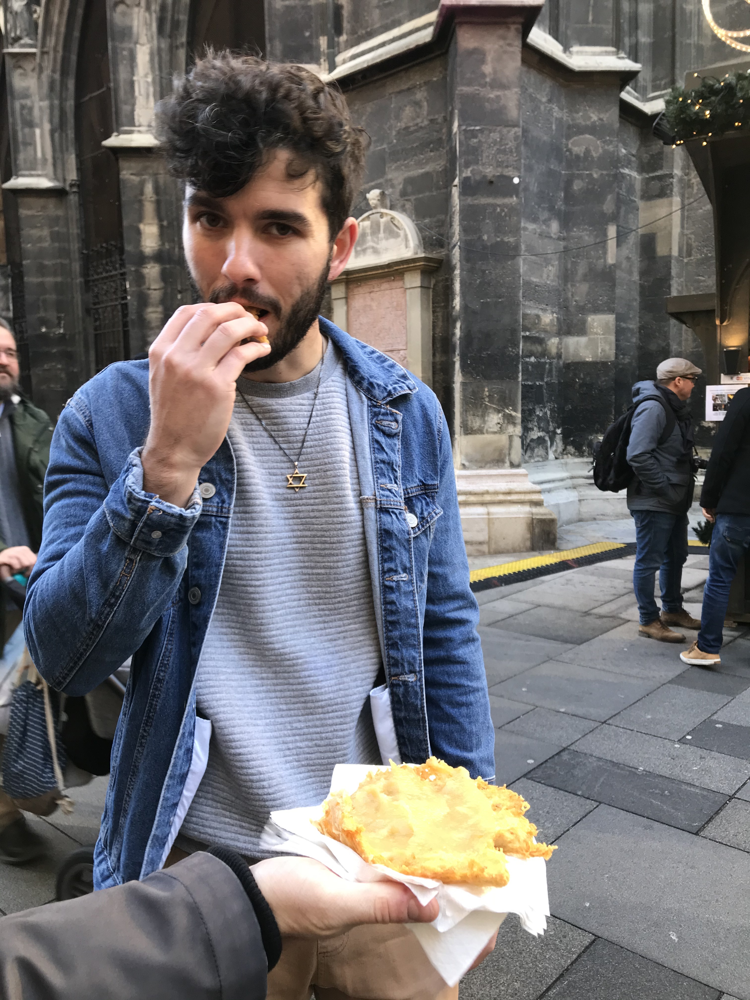
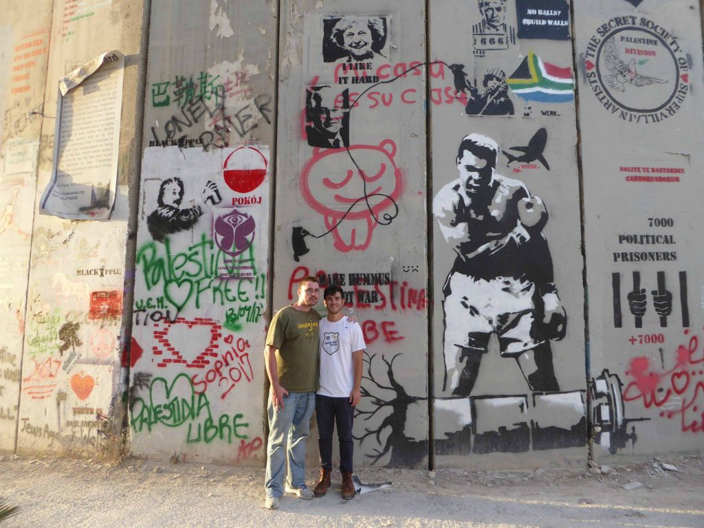

Mémorial de la Shoah, Paris, France

Eating Kartoffelpuffer, Vienna, Austria
But the truth is that whether it’s a multi-week trip to another continent or an impromptu weekend in my hometown I always travel to recalibrate.
Here’s a little background for you:
I had the privilege of moving from house to house and city to city while growing up which has resulted in me being one of the most go-with-the-flow people you’ll likely ever meet. I constantly waiver between an addiction to stability and an addiction to change. Some might conflate this with a lack of commitment, but I’ve never seen it that way. I do what I want and burn the least amount of bridges while doing it.
So over the past few months when I moved cities and began my career, I had a seamless transition from university to the working world. Charlotte is also right around the corner from Atlanta, so I’m not too far from my past life; and I started at my company with a cohort of graduates from all over the world, so new friendships are easily formed.
In comparison to what I thought industry would be like: the 9 to 5 schedule, the monotony of a cubicle and looking at the same software every day, yearning for the weekend or the next holiday – my career has started on the complete opposite end of the spectrum. I choose my projects and set my schedule without a boss looking over my shoulder. It’s been a breath of fresh air since I got out of Georgia Tech.
All things considered I haven’t given too much thought to my new phase of life beyond gratitude, of course, and haven’t felt the need to recalibrate from the changes that would normally push people over the edge.
I managed to sustain that mindset until the past month.
It isn’t work or homesickness that are consuming my thoughts as of late, but my Jewish identity that has infiltrated every aspect of my professional and personal life as I find myself in tough conversations whether I like it or not.
I wrote about my first experience in an earlier article that you can read here, but my latest struggles began at a house party in NYC right before thanksgiving.
It was a great night with old friends, best friends, new friends, and local bands stuffed into a little house in Bushwick, Brooklyn.
I’ll boast that one of my best traits is that I never meet a stranger. I have so many WhatsApp and Facebook friends from 1-hour plane rides and airport terminal bars that if you found my phone, I doubt you could figure out where I’m from. This night in Bushwick was no different. I met transplants and Brooklynites alike, but unfortunately only one has managed to stay on my mind since that night: A New Yorker with a Palestinian and Jordanian heritage who works for a Palestinian non-profit.
I couldn’t tell you her name or what she likes to do like I could with Hammer who I met at the Charlotte airport or Blake who I met on a flight to New Orleans. We ended up in the same group at the party where I got her name and where she was from, but she never asked for mine. As soon as she saw the Star of David on my neck, I could feel she no longer saw me as a person.
Tension or not, I locked in. She was on a couch, so I sat at her feet and begged her to share her experiences with me before I even brought up one of my thoughts.
What I got in return wasn’t her experience, it was hatred of not only Israel and the Jewish people but me.
She hated me.
She told me about the atrocities committed by the Israeli government and how it doesn't have the right to exist, but when I brought up any type of counterargument, she would dismiss it as Israeli propaganda. This to me holds some truth, but the only truth about the conflict is that there are always two or more truths to its history and each of these truths are mangled with blood and hatred. The fact that she didn’t even consider another side made me realize that the conversation was going to be me listening and her preaching her own truth. Every single time I said something, she picked a word out of my sentence and hung onto it without actually listening to the point I was attempting to get across.
As an example, I began to tell her about one of my most influential experiences while in Israel and Palestine: I took the Dual Narrative tour offered by Abraham Hostel in Jerusalem. This tour takes a group to one of the four holy cities, Hebron, to be led through the Israeli side by a Jew and the Palestinian side by an Arab. I never got past the word Arab before she yelled at me:
“See? You said Arab! You see what you’re doing? You’re disqualifying the entire Palestinian people as just Arabs!”
I see her point when rhetoric is so important in arguments like these, but seriously? As someone who has been to not only Israel and Palestine, but also Jordan, I found this so disturbing. I am not against the Palestinian people or even the withdrawal of Israeli settlements and the establishment of a Palestinian state so why is my open-minded experience being entirely dismissed by someone who has never even been to the countries involved?

Near the Walled Off Hotel, Bethlehem, Palestine
After a noise complaint was filed and the cops showed up to kick everyone out of the house, I found her, and this is how the conversation went:
Me: Hey, I know it’s a tough conversation, but I really enjoyed talking with you. And at the end of the day we’re all human, right?
Her: No, some of us are colonist, Zionist pigs.
Me: Yikes.
No matter the topic, I always like to understand other sides even when they seem close-minded and radical. It could be a blind allegiance to Trump or conspiracy theories and everything in between.
But with her, I still can’t take it. I was shaking while recounting the whole encounter at dinner with one of my friends. It’s one thing to be hated for my actions or beliefs, but it’s something completely different for someone to have an unwarranted hatred for my identity and very existence.
For the first time in my life, I experienced full-fledged racism.
The kind that has made my African-American friends, Ashley and Ore, say in a concerningly normal tone, “welcome to being a minority”.
I know she’s an outlier, because not only have I had fruitful conversations with some of my Muslim friends in the US, but also in the Middle East. My Persian brother Sommy, Jordanians, and Muslims in general will treat me more like family than Jews sometimes and it shows in these conversations.
My next encounter was virtual. A good friend of mine commented on my Instagram story saying that my view of “Anti-Zionism shares the same thoughts as Nazism” is a bad take. After talking with him, I now agree that is was a mainstream media-like blanket statement that poorly represented my point that anti-Zionism is received as antisemitism when no context is given.
To quickly address this argument, I don’t believe anyone should ever say they’re anti-Zionist unless they’re ready to either defend their reasoning or straight-up admit they’re antisemitic. Looking at it from the perspective that I have no skin in the game, anti-Zionism appears to be comprised of different views from many different political beliefs and is harmless on its surface, but I’m not afraid to admit as a Jew that anti-Zionism looks much more like a wolf in sheep’s clothing. By generally saying you’re anti-Zionist, you’re saying you’re against Israel’s right to exist entirely – that it should be boycotted, divested, and sanctioned. That Jews are not indigenous to the land and are, in fact, European colonizers.
Don’t make a blanket statement like I did. It’s a difficult situation so be ready to address it in a difficult manner:
Say that you’re critical of the Israeli government and its policies (most of us Jews sure as hell are).
Be anti-settlement and desire to see equal representation in society for all in Israel.
Be against the targeting of Palestinian infrastructure by the Israeli government.
But don’t forget to acknowledge the humanity of Israelis, Palestinians, Jews, and Muslims while doing it.
Whether or not you like that argument is up to you, but it’s how I view it as a Jew. At the end of the day, you can withdraw yourself from the conversation and worry about another issue with no questions asked.
I don’t have that luxury, though. While you may try to make it as real and relevant to your life as possible there is still a veil between us that you can only listen through. All I can do with Ashley and Ore is listen to their struggle and try my best to empathize, but even that isn’t enough to break that veil.
After listening to me vent about my encounters, Ashley told me “it must be difficult being Jewish”. Although we could empathize with a majority each other's situation, there are still aspects with which we're unable to relate. For example, with the exception of North African Jews we’re not black, but to others we’re not white. We’re sometimes an ethnicity and sometimes a religion and sometimes both. It’s not worse than the black struggle; it’s just different and no matter how many articles you read or videos you watch, only Jews can truly understand what it’s like to have skin in the game.
And that goes both ways: I may have grown up in the hood, seen the violence, and lived on knockoff soda and gas station food paid for by food stamps, but I still won’t ever fully understand Ashley’s struggle or the struggle of the black and Latino families that took me in and treated me as their own.
So when people with social privilege come try to tell me they understand the black or Jewish or any minority struggle after reading a Vox article, I can’t help but get heated.
You may live and breathe black history or middle eastern politics, but what good is it if you can’t go through what blacks and Jews and Muslims have gone through and continue to live in everyday?
Like that feeling of when cop lights go on in your rearview and all of the brutality videos run through your head or the way I fix my eyes on the door at synagogue knowing that at any moment a crazed supremacist could come in and take us all out.
You could become the most pro-Jewish rights activist in the world, join me at synagogue, and feel the fear that someone could run in with a gun. That fear you’d feel is different, though. You were just in the wrong place at the wrong time while I was essentially in my house with my family. You might end up the victim of an attack because you were fighting for what you believed in, but I’d end up the victim because I’m the embodiment of what you believed in. I wouldn’t be given a chance by an anti-Semitic murderer to renounce everything.
Maybe you would.
No matter what is taught in history class, a political science degree, or a condensed “here’s what you need to know” article, these situations run deeper. My experience is one of millions and that goes for every person on every side of this 360-degree argument, so I don’t want to discredit the passion of anyone by any means. My point is that it’s more detrimental than helpful when people talk more than they listen on topics as complicated as these, even when we may have the same goal.
Thoughts and experiences are ignored, accusations are thrown, swords are drawn, friendships are dismantled.
To anyone reading this, I can’t wait to listen to you if you’re willing to share; however, I will immediately shut down if it’s coming from a place that you’re not willing to reevaluate because that’s exactly where I come from.
I spent too many years being a Christian to be preached at as a Jew.
All of the negativity aside, throughout this past month I’ve also had great conversations with people that have made me feel like I still belong in the fight to make the world a better place rather than hiding behind an insular community of people that regurgitate the same information from the same sources as me.
It just takes so much to come back from an encounter like I had in Bushwick or on Instagram. Being called racist and a pig is something I hope nobody has to experience. I can’t help but wonder if I have the wrong idea and my feeling of being alone is the result of this bad philosophy. I experience pushback on all sides no matter the trajectory. These conversations help, but they don’t give me exactly what I’m looking for.
This is why I don’t want to travel but need to travel.
I spent the last couple weeks in Europe. It’s honestly not foreign to me anymore, but it’s still different enough to make me feel like I’m away from my life. To make me feel like a nobody in the good way – the way that makes me remember how big the world is and how small and silly my problems are.
I have a great group of friends who are spread throughout Europe, but mostly concentrated in Switzerland. They never hesitate to invite me to dinner, stay at their place, or introduce me to new friends – anything to make me feel at home. They’ve even proudly shared stories about their families hiding Jews from the Nazi regime, a sentiment that sometimes feels opposite of how the rest of Europe is feeling towards us. I bring this group of friends up because even though they were raised on the other side of the world in ways that differ greatly from my own, we have so much in common that you wouldn’t be able to tell we came from different countries - all accents aside.
Along with my friend group across the pond, I continue to meet people from everywhere and from all walks of life and the interactions that ensue are, to me, the most human that anyone can experience.
My uber driver with Haitian parents that asked me to tell him about the US so he can dream about it that night.
The pastry chef who giggles at my French and then proceeds to teach me how to say it properly.
The Senegalese waiter who wants to practice Spanish so he can better accommodate Spanish-speaking customers.
These are the people and experiences that recalibrate my humanity and its universalism.
No matter how critical I can be of life, I’m an optimist who wants nothing but to see others succeed.
And no matter how much I may want to ignore my identity or my perspective, I’m reminded that fighting for everyone is also fighting for myself.
חנוקה שמח
happy chanukah